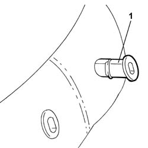
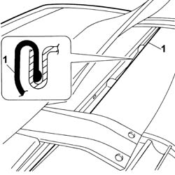
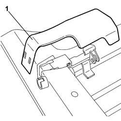
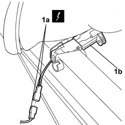

7050J42 Rear seat head restraint folding motor (one), left or right - R.R.
- Path
- Procedures > 70 FITTINGS > 7050 REAR SEATS > 7050J REAR ELECTRIC SEAT MOVEMENTS > 7050J42 Rear seat head restraint folding motor (one), left or right - R.R.
- Kind
- repair procedure (removal / refitting; the operation number is the code)
- Applies to
- all engines; all production periods
- Interactive page
- https://sloeber94.github.io/elrnDB-lThss/en/#/197556
Applies to: all engines; all production periods
 Removing
Removing
 Refitting
Refitting- Disconnect the negative battery terminal.
See in Op. 7050A20 Single rear seat cushion - R.R.
See in Op. 7050A19 REAR SEAT BACKREST - R.R.
1. Release the part connected to the heater pad and remove it from the housing for the head restraint pins.

Applies to: all engines; all production periods
1. Release the cover along the backrest perimeter for the part connected to the heater pad.

Applies to: all engines; all production periods
- Lift up the backrest cover complete with upholstery.
1. Remove the protection for the rear seat head restraint motor.

Applies to: all engines; all production periods
1. Disconnect the electrical connector (1a) and remove the rear seat head restraint folding device (1b) from the housing.
 | Description | Connector |
|---|---|---|
1a | Left rear head restraint folding motor | N120 |
| Description | Connector |
|---|---|---|
1a | Right rear head restraint folding motor | N121 |
| Description | Connector |
|---|---|---|
1a | Centre rear head restraint folding motor | N122 |

Applies to: all engines; all production periods
Refitting
Removing- Fit the head restraint folding motor in the housing and connect the electrical connector.
| Description | Connector |
|---|---|---|
. | Left rear head restraint folding motor | N120 |
| Description | Connector |
|---|---|---|
. | Right rear head restraint folding motor | N121 |
| Description | Connector |
|---|---|---|
. | Centre rear head restraint folding motor | N122 |
- Fit the protection for the rear seat head restraint motor.
- Reposition the backrest cover complete with upholstery.
- Fit the cover surround along the perimeter.
- Fit the head restraint pins in place.
See in Op. 7050A19 REAR SEAT BACKREST - R.R.
See in Op. 7050A20 Single rear seat cushion - R.R.
- Connect the negative battery terminal.